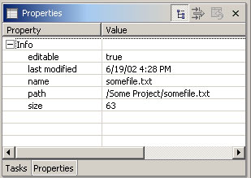

| Managing screen real estate
with fast views |
Use fast views to free up screen real estate while
keeping views easily accessible. Clicking on the icon for a fact view
temporarily reveals it over top of the other views. The fast view retracts
as soon you click off of it. The Fast View action for turning a
view into a fact view is found on the view's system menu. You can also create a fast view by dragging
a view onto the
shortcut bar. |
| Open editors using drag and
drop |
You can open an editor on an
item by dragging the item from a view like the Navigator or Package Explorer
and dropping it over the editor area. |
| Restoring removed resources |
Select the parent resource and use Restore
from Local History to restore removed resources. You can restore more than one
resource at one time.

|
| Like to start afresh each session? |
A setting on the Workbench
> Editors preference page closes all open editors automatically
whenever you exit
Eclipse. This means that Eclipse restarts with an empty editor area, and
make start up a bit fast. |
| Better UI for editor / view
synchronization |
The Navigate > Show In
action provides a uniform way to navigate from an open editor to a view
showing the corresponding file (e.g., in the resource Navigator view), or
from a file selected in one view to the same file in a different view (e.g.,
from the resource Navigator view to the Java Packages Explorer view). |
User customizable
key bindings |
If you find yourself doing an
action a lot, you might be able to streamline things by assigning a key
sequence to trigger that action. Creating new key bindings, and viewing
existing bindings, is done from the Workbench >
Keys preference page.

|
| Go to last edit position |
Press Navigate > Go
to Last Edit Position (Ctrl+Q) in any text-based editor to take you back to
the place where you last made a change. A button marked  shows up in the toolbar when the Editor Navigation action set is
enabled.
shows up in the toolbar when the Editor Navigation action set is
enabled. |
| Faster workspace navigation |
Whenever the resource Navigator
view is visible, Navigate > Open Resource (Ctrl+Shift+R) brings
up a dialog that allow you to quickly locate and open an editor on any file
in the workspace. In the same vein, Navigate > Go To > Resource
expands and selects the resource in the Navigator view itself. |
| Tiling the editor work area |
You can use drag and drop to modify the layout of your editor
work area. Grab an editor tab and drag it to the edge of the editor work
area. The arrow dock icons
(e.g.,  ) indicate which way the editor work area will split. ) indicate which way the editor work area will split.

|
| Now where was I? |
Workbench editors keep a navigation
history. If you open a second editor while you're editing away, you
can press Navigate > Backward (Alt + Left Arrow, or the  back arrow
on the workbench toolbar) to get back. This makes working with lots of open editors a whole lot easier.
back arrow
on the workbench toolbar) to get back. This makes working with lots of open editors a whole lot easier. |
| Linking view to current open
editor |
The resource Navigator (or similar) view is not tightly linked to the currently open editor by default. This means
that closing or switching editors does not change the selection in the
Navigator view. Toggling the Link with
Editor button in the Navigator view toolbar ties the Navigator view
to always show the current file being edited.

|
| Copying and moving resources |
You can drag and drop files and
folders within the Navigator view to move them around. Hold down the Ctrl
key to make copies. |
| Importing files |
You can quickly import files and folders
into your workspace by dragging them
from the file system (e.g., from a Windows Explorer window) and dropping them into the Navigator view.
The files and folder are always copied into the project; the originals are
not affected. Copy and paste also work. |
| Exporting files |
Dragging files and folder from the
Navigator view to
the file system (e.g., to a Windows Explorer window) exports the files and
folders. The files and folder are always copied; workspace resources are
not affected. Copy and paste also work. |
| Collapsing all open items |
Use the Collapse All button on the
Navigator (or similar) view
toolbar to collapse all expanded project and folder items showing in the Navigator view.

|
| Open editors with a single click |
Use the Open mode setting on the Workbench
preference page to activate single click opening
for editors. In single click mode, a single click on a file in the
Navigator view selects it and immediately opens an
editor on it. |
| Next / previous navigation |
You can use Ctrl+. and Ctrl+,
to navigate to next/previous search match, editor error, or compare
difference. |
| Describing your state |
When reporting a problem, it's
often important to be able to describe your particular Eclipse setup. The Configuration Details button
on the Help > About Product dialog opens a text editor on
a buffer containing various pieces of information about your setup,
including plug-in versions, preference settings, and the contents
of the internal Eclipse log file. You can save this, and attach the file
to your problem report. |
| Workspace project management |
Use the Project > Close Project action to
manage projects within your workspace. When a project is closed, its resources
are temporarily "offline" and no
longer appear in the Workbench (they are still sitting in the local file
system).
Closed projects require less memory. Also, since they are not examined during builds,
closing a project can improve build time. |
| Restoring a perspective's layout |
Rearranging and closing the views
in a perspective can sometimes render it unrecognizable and hard to work
with. To return it to a familiar state, use Window > Reset Perspective to restore
the current perspective to its original layout. |
| Pinning editors |
When the Close editors
automatically preference is active (found on the Workbench > Editors preference page), you can stop an editor from being
closed by using the
Pin Editor button which appears in the workbench toolbar.

|
| Importing an existing project |
If you import an existing project,
none of the
resources files for the project are copied. If you check the
properties of the project, you'll see that the project's location in the
file system is the location you specified. |
| Reordering editor tabs |
You can rearrange the order of open editors by using drag and drop.
Grab the Editor tab and drag it to the position you want the editor to appear.
When positioning editors, the stack icon  indicates a valid spot to drop.
indicates a valid spot to drop. |
| Deleting completed tasks |
Use the Delete Completed Tasks action in the Task view popup menu
to remove all completed tasks from the Tasks view. This is more convenient
than individually
selecting and deleting completed tasks. |
| Quick navigation between views, editors and perspectives |
A look at Window > Keyboard Shortcuts menu
reveals a number of ways to quickly navigate between the various views, editors, perspectives, and menus in the workbench.
These actions have keyword accelerators such as Ctrl+F8 for switching
between perspectives, Ctrl+F7 for switching between views,
Ctrl+F6 for switching between editors, and F12 for activating an editor.

|
| Maximizing a view or editor |
You can maximize a view or editor by
double clicking on the view's title bar or the editor's tab. Double click
again to restore it to its usual size. |
| Viewing resource properties |
Use the Properties view (Window
> Show View > Properties) when viewing the properties or many
resources. Using this view is faster than opening the Properties dialog for each resource.
 |
| Quickly find a resource |
Use the Navigate > Go To > Resource action to quickly find
a resource. If the Go To > Resource action does not appear in your perspective, you can
add the action by selecting the Window > Customize Perspective > Other > Resource Navigation action set. |
| Extra resource information |
Label decorations are a general
means for showing extra information
about a resource. Use the Workbench > Label Decorations preference
page to select which of the available kinds of decorations you want to
see. |
| Filtering resources |
The Navigator and Tasks views both
support filtering of their items.
You control which items are visible by applying filters or working sets. The Filters
actions are found on the view menu. The working set is set from the Select
Working Set action on the Navigator view menu. In the Tasks view, a
working set can be set from within the Filters dialog. |
| Customizing toolbar and menu
entries |
Any selected items in the Other
category in the Window > Customize Perspective dialog will appear
on the tool bar or menu bar. |
| Special end character for resource name patterns |
The Open Resource and Go To > Resource dialogs support the
end character '<'. For example, if you want to see all resources that exactly match "Test", use the end
character. If the pattern does not end in '<', a '*' will be appended to the pattern.
Entering "Test" will show all resources starting with "Test". |
| Tasks view quick fixing |
You can use the Quick Fix feature from the Tasks view.
To execute the quick fix action, select the item and activate the Tasks view popup menu. If the
Quick Fix menu item is enabled, a fix for the item exists. |
| Creating path variables |
You can define a path variable when you
create a linked resource or you can use the Window > Preferences > Workbench
> Linked Resources preference page to define path variables.

|
| Extending path variables |
When specifying the location for a linked resource,
you can extend a path variable. A path variable can be used as the root for a group of
linked resources. By using a path variable, you can share projects containing linked
resources without requiring team members to have the exact same directory structure as on
your file system. |
| Activating an action set |
Use the Window > Customize Perspective > Other
option to activate action sets for a Perspective. The action set items will appear on
the Perspective's menus and toolbar.

|
| CVS Watch/Edit |
The "edit" portion of
CVS Watch/Edit is now supported within Eclipse. Through settings on the
Team > CVS > Watch/Edit preference page (which must be set
before the projects are added to your workspace), you can choose to automatically
notify the CVS server whenever you start to edit a file. In turn, the CVS
server will notify others on the watch list for that file. When you go to
edit a file, you are warned if there are others editing the same file. Team
> Show Editors on a file's context menu lists everyone currently
working on the file. There are also Team > Edit and Unedit
actions. |
| Working set for imported team
projects |
There is now an option to create
a working set for projects imported into the workspace via Import >
Team Project Set. This works for all types of repositories.

|
| CVS now supports working sets |
Users can now define working sets
which will limit the number of projects shown in the CVS Repositories view. |
| Comparing different versions |
Select any folder or file in the
CVS Repositories view and choose Compare With from context menu to
compare it against some other version. |
| Restoring deleted files from
CVS |
Deleted files can now be queried
and restored from the CVS repository using the Team > Restore from
Repository command, which is available on CVS projects and folders. |
| CVS Quick Sync |
A new "quick sync" action
has been added to the CVS action set. The action lets you select which CVS
projects to synchronize. A new button shows up in the CVS repository view,
but you can customize your workbench toolbar to place it within easy reach. |
| More flexible CVS checkouts |
A new Checkout Into action
lets you check out a folder into an existing project. And a checked-out
folder in a project can be disconnected from CVS control so that it can
be changed in or deleted from a workspace without queuing up outgoing CVS
changes. And CVS projects can now be configured to not fetch absent directories
on update. |
| My SSH server only support SSH2 protocol |
Eclipse comes with a built-in
SSH connection method called 'extssh'. However this method only supports
SSH1 servers. If your server is running SSH2 and you want to use Eclipse
to connect to that server you have two options:
- use a command line SSH client that supports SSH2 with the 'ext' connection
method
- download a plugin created by JCraft
that provides a SSH2 connection method.
To use the 'ext' connection method, download and install an SSH command line client
for your operating environment. In the Team > CVS > Ext Connection Method preference page, configure the location of the SSH executable and how the executable
is to be called. For the ext method to work the CVS client on your server
must support the server mode. You can verify this by running cvs --help-commands
and ensure that the server command is supported. |
| Working with a CVS Synchronize view
that contains many conflicts |
If your sync view contains many
false conflicts (e.g. file that are marked as conflicting but
whose contents are actually the same).
- From the view's toolbar menu select Compare File Contents.
- The synchronization will be refreshed and all false conflicts will
be removed.
- For any remaining real conflicts you can either accept the remote
contents Override and Update or release your file to
the server Override and Commit.
|
| Sharing your CVS lineup with others |
You can save the list of projects
shared with CVS into a team project set. This provides an easy way of
re-creating your workspace with shared CVS projects.
- Once you have checked out the set of projects from the CVS repository,
select File > Export from the main menu.
- Select Team Project Set from the list and then select
the projects to be exported. The generated file can be shared with your
team to allow quick setups of your development environment.
- To import the project set select File > Import
and select Team Project Set. The projects will be checked
out of CVS and a repository location will automatically be created.
|
| Reverting a managed CVS file that was
edited, but not committed |
There are a two ways of doing
this:
- Select the file and from the context menu select Replace With >
Latest from HEAD.
or
- Select the file or a parent folder and from the context menu select
Team > Synchronize with Repository.
- Next switch to incoming/outgoing mode using the toolbar button in
the view.
- Select the file and from the context menu select Override
and Update.
|
 Bookmark Document button on the toolbar of the Help browser. The
bookmarks show up in the
Bookmark Document button on the toolbar of the Help browser. The
bookmarks show up in the  Bookmarks tab.
Bookmarks tab.